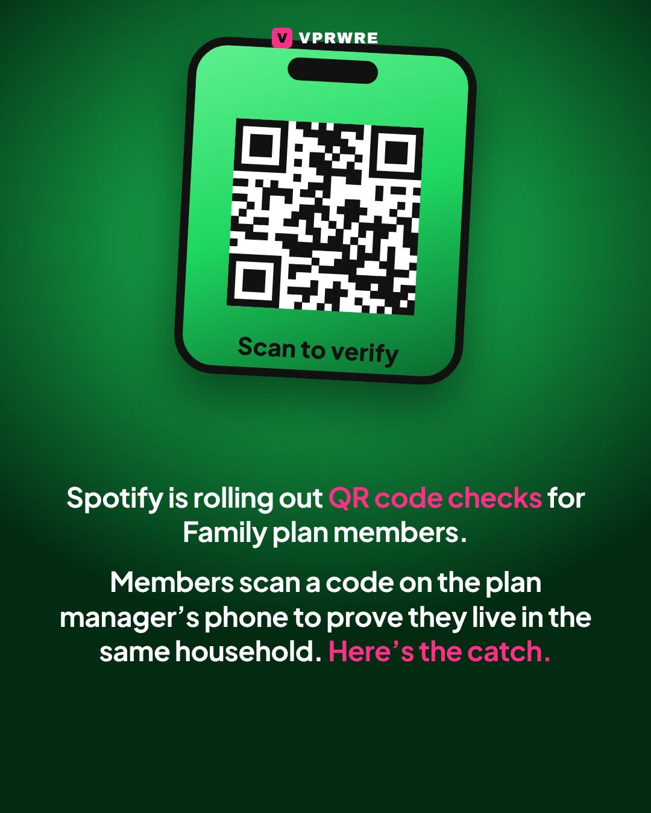
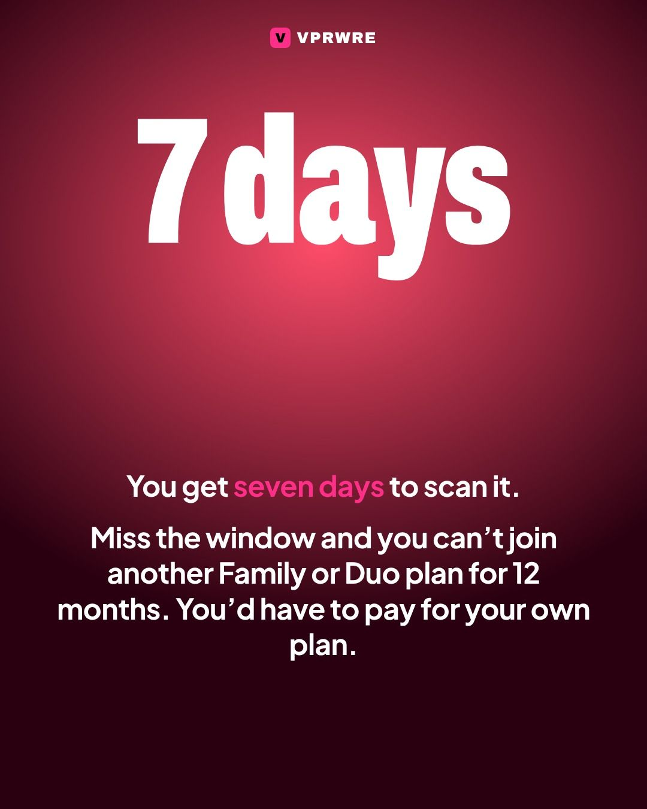
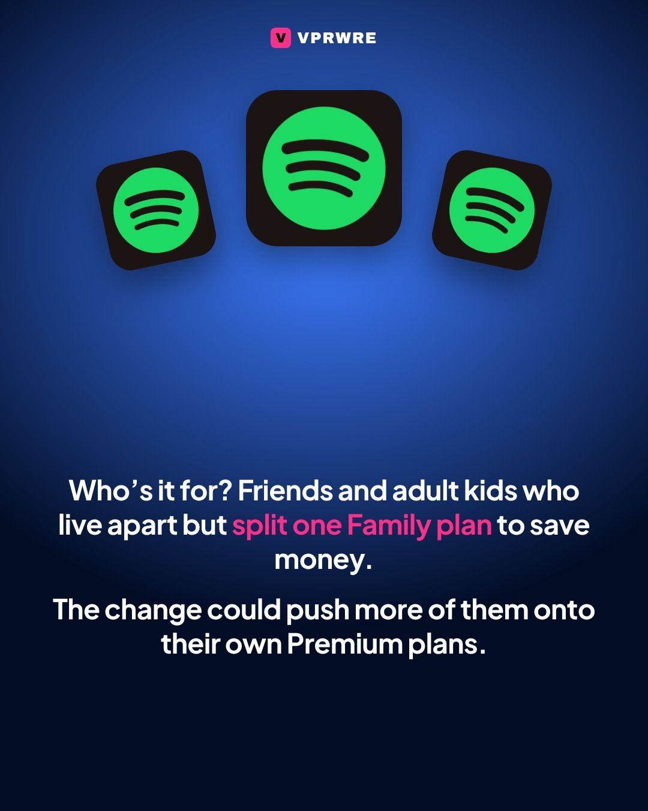
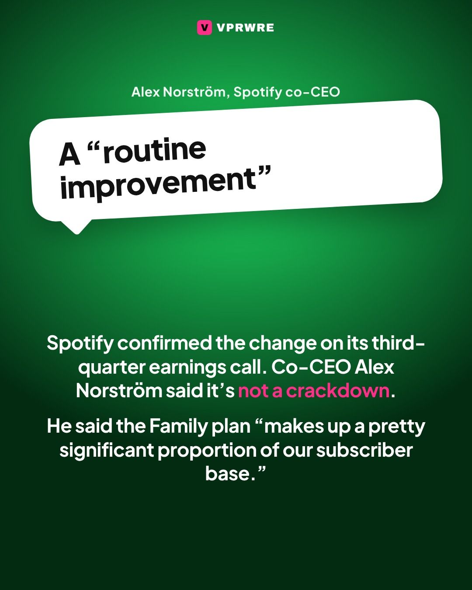
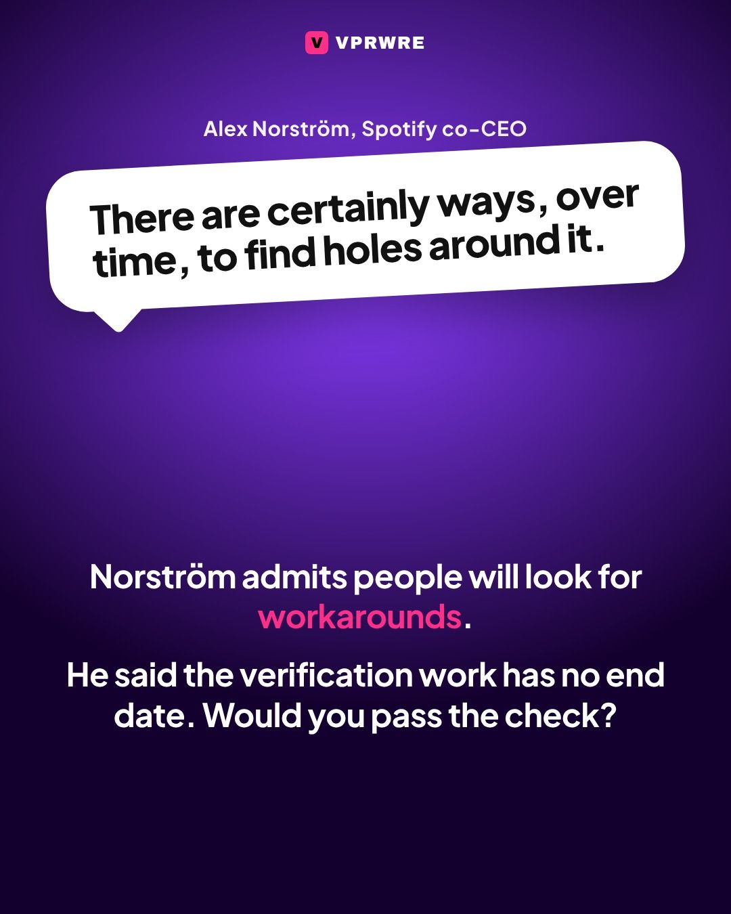

Culture
Spotify will check if your family really lives together.
Spotify will check if your family really lives together.
Spotify is rolling out QR code verification for Family plan members, to confirm they live in the same household as the plan manager. Members get a prompt in the app and scan a code shown on the plan manager’s phone, according to Spotify’s support documentation. They have seven days to do it. Miss the window, and they can’t join another Family or Duo plan for 12 months and have to move to an individual plan they pay for themselves.
Spotify confirmed the change on its third-quarter earnings call. Co-CEO Alex Norström called it a “routine improvement” rather than a crackdown and said the Family plan “makes up a pretty significant proportion of our subscriber base.” He added: “There are certainly ways, over time, to find holes around it.” He said the verification work has no end date.
Would your family pass the check? Tell us below.
The carousel
7 slides · Open on Instagram






Disclosure: VPRWRE drafts with Claude, Anthropic’s AI.